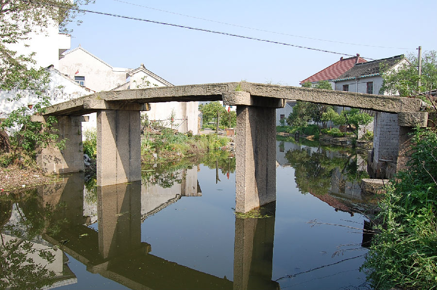

嘉兴市文物保护网 · 市级文物保护点 · 2020-11-02 · 原文

洪典桥位于嘉兴市秀洲区王江泾镇洪典村8组，根据桥额旁刻字，桥建于清道光十七年（1837）。东西横跨洪典港，系三孔无拦石板桥，全长18.1米，宽2米，净跨12.13米，矢高2.6米。桥面由3块长条石平铺，桥柱由3块条石竖置构成，桥身刻有纹饰。桥额刻有“鼎建洪典桥”和“道光十七年”字样，两侧有回纹。北侧楹联为“东迎旭日庆升平，接长流承种福□”。南侧楹联不清晰。洪典桥造型简朴，构造稳重，在当地较有影响力，具有一定历史和科学价值。2010年公布为嘉兴市文物保护点。